查找细节
回忆上节课内容🤔
- 我们上次研究了文件读写
- 打开是
e,edit:e oeasy.txt:e .
- 读是
:r,read:3r o2z.txt- 在指定位置(3)读取文件
:9r !ls -lah- 在指定位置(9)读shell命令运行结果
:r !sed -n 1,3p oeasy.css- 可以把oeasy.css前三行读取到当前行之下
:6r !sed -n 1,3p oeasy.css- 在指定位置(第6行)把oeasy.css(1-3行)读取到当前行之下
- 写是
:w,write:w o3z.txt- 直接写
:3,8w o3z.txt- 范围写
:w o3z.txt >>- 追加写
:w! o3z- 强制写
- 命令行可以进行批量替换么？🤔
- 我们先回忆一下搜索的细节
搜索文件
/正向
/oeasy从上到下搜索oeasyhls让搜索结果高亮- n 保持正方向
- N 改变为反方向
- 搜索到结尾之后可以用
wrapscan从头搜索
?正向
?oeasy从下到上搜索oeasyhls让搜索结果高亮- n保持反方向
- N改变反方向，改从正方向
- 搜索到开头之后也可以用
wrapscan从头搜索
使用寄存器
- 如果想在搜索或者命令行模式下使用寄存器中的内容
- 可以这样ctrl+r然后指定寄存器
- : ctrl+r *
- 把剪贴板里面的内容粘贴到
:后面 :h c_ctrl-r- 查询命令行模式下的 ctrl+r
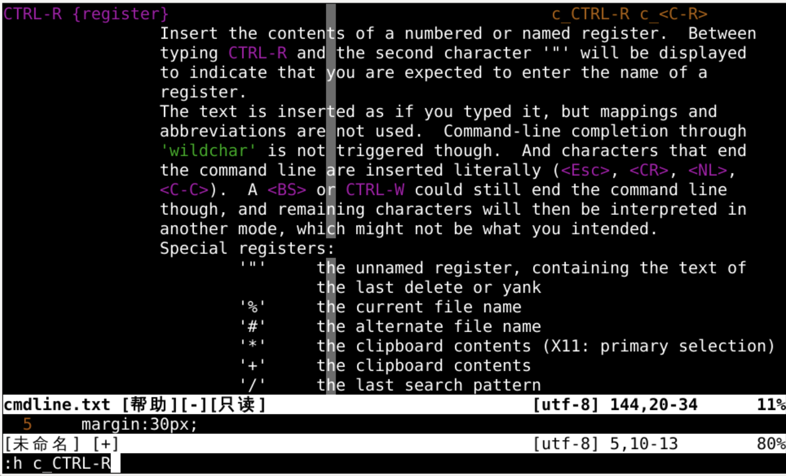
匹配模式
- 除了完全匹配的单词之外
- 搜索也支持模式匹配
{pattern} - 什么模式匹配
:h pattern
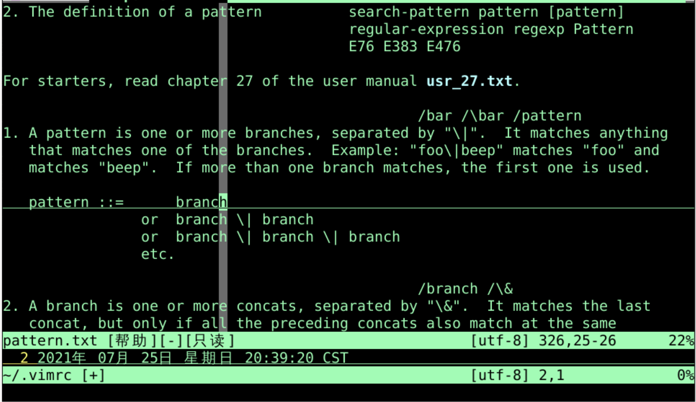
动手练习
:r !ls -lah/shiyanlou- 修改大小写
- 然后尝试大小写的匹配
大写小写
- 如果查找要忽略大小写的话
- 就用
ignorecase :set ignorecase- 简写为
:se ic - 取消为
:se noic
- 就用
ignorecase可以和smartcase智慧大小写配合- 如果搜索模式里面有
大写字母就完全匹配/Oeasy必须完全符合
- 如果没有
大写字母就忽略大小写/oeasy忽略大小写
- 如果搜索模式里面有
- 还可以加开关
/oeasy\c不区分大小写的oeasy/oeasy\C区分大小写的oeasy
- 具体可以
:h ignorecase
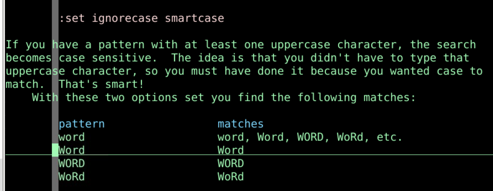
- 模式是什么意思？
字符重复*
- 字符数量
*代表0到任意多个前字符+代表1到任意多个前字符?代表0或1个前字符
/a*可以匹配aaaaaa- `` 空串也可以匹配
/\(oe\)*可以匹配oeoeoeoeoeoe- `` 空串也可以匹配
()括号中的oe是一个可重复的原子\(\)括号符前面加反斜杠转义
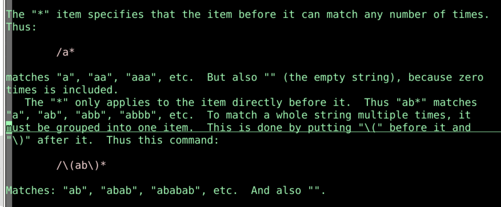
字符重复+
+对应1到任意多个字符/oe\+可以匹配oeoeeoeee- 不能匹配
o
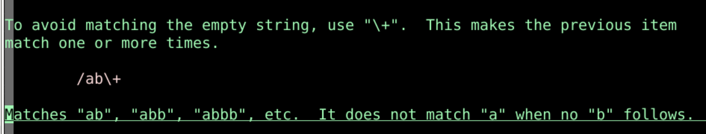
/\(oe\)\+可以匹配oeoeoe
字符重复=
=对应0或1次重复
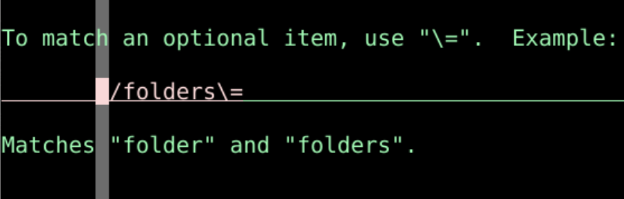
字符重复 \{3,5} 指定次数
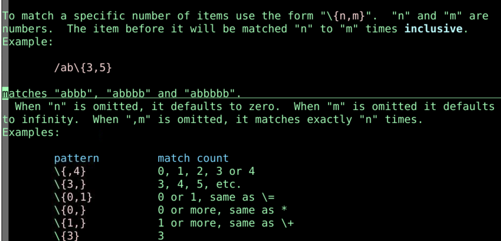
*对应\{0,}+对应\{1,}=对应\{0,1}
并列关系
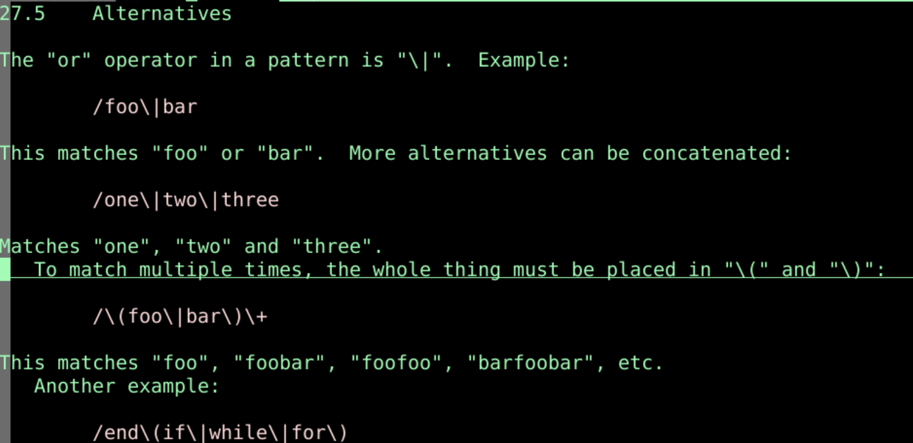
/oeasy\|o2z匹配oeasy或者o2z
/oeasy\|o2z\|o3z匹配oeasy或者o2z或者o3z
/\(ab\|cd\)\+匹配abab或者abcd或者cdab或者cdcd或者ababab..等
字符范围
/a\|b\|c\|d- 可以用
/[abcd]来描述 - 也可以用
/[a-d]来描述a-d代表从a到d
[a-z]代表任意小写字母[A-Za-z]代表任意字母[0-9a-gz]代表数字或a-g或z
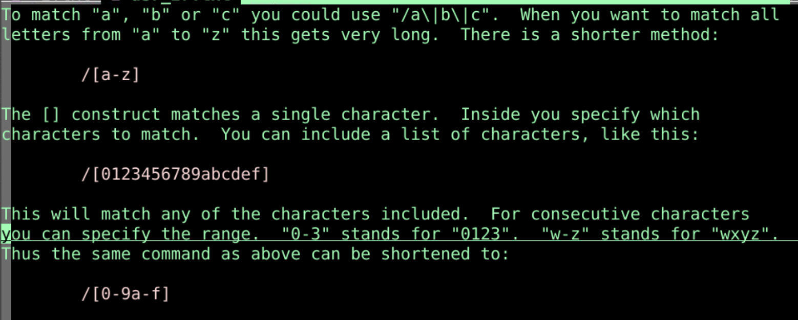
特殊字符
- 特殊字符也可以放到字符范围里
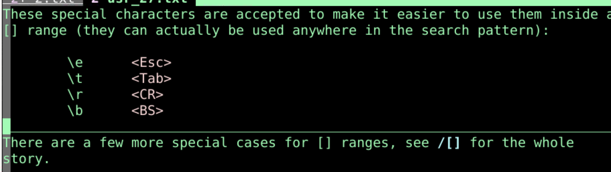
排除字符^
/[^a]^在中括号内部开头时- 代表排除
a以外的所有字符
- 在中括号内部开头时
^的意思是排除
- 不在中括号内部开头时
- 表示行头
/^dr匹配行头是dr的
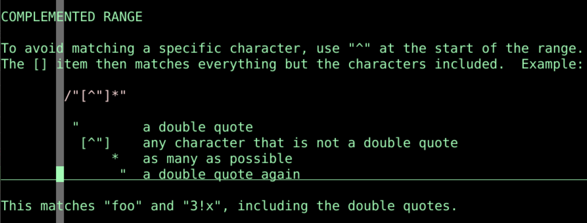
预设字符范围
- 有一些字符范围是很常用的
- vim做些预设
- 比如
.代表任意字符
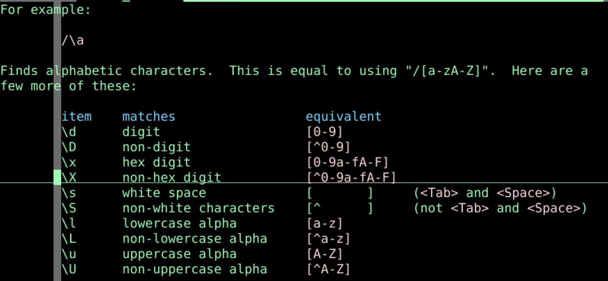
- 能用字符预设就不用字符范围
- \d 数字
- \D 非数字
- \x 十六进制数
- \X 非十六进制数
- \s 空格和tab
- \S 非空格和tab
- \l 小写字母
- \L 非小写字母
- \u 大写字母
- \U 非大写字母
- 字符预设匹配的速度很快
- 用了字符预设就不用[]了
- /[\d\l]* 是不能用的
- 可以用 /(\d\l)* 代替
练习
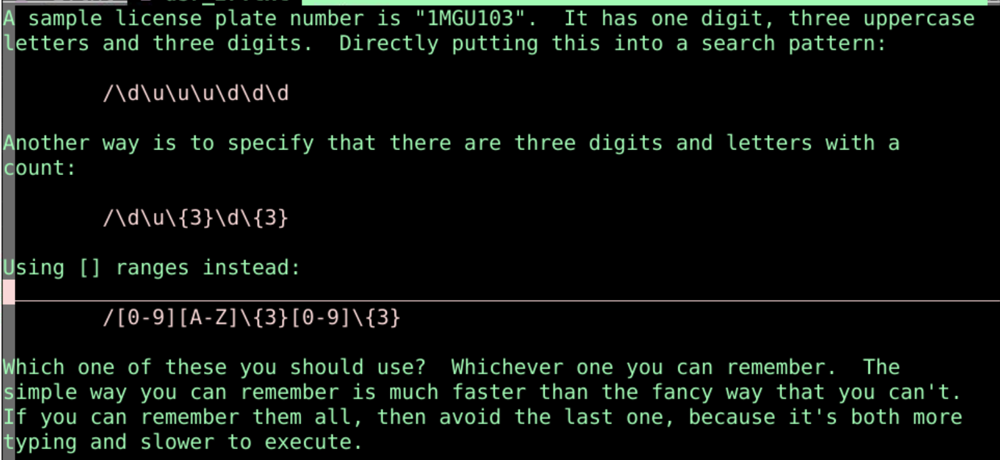
- 上述三个表达式是相同的
- 尽量选第二种表示方法
- 绝对要避免第三种表示方法
- 因为那太慢
匹配换行
/one\ntwo可以匹配换行s\nd可以匹配上一行以s结尾，本行以d开头
/one\_stwo可以匹配换行也可以匹配空格one two\s是空格\_s是空格或者换行
- 前面加上
\_就是给字符或上换行符\_.匹配包括换行符的任意字符
/"\_[^"]*"[^"]除了引号外的所有字符不包括换行符\_[^"]除了引号外的所有字符也包括换行符\_[^"]*任意多个除了引号外的所有字符也包括换行符/"\_[^"]*"- 被引号包裹起来的
- 任意多个除了引号外的包括换行符的所有字符
- 这样就可以匹配带换行的字符串了
- 动手试一试
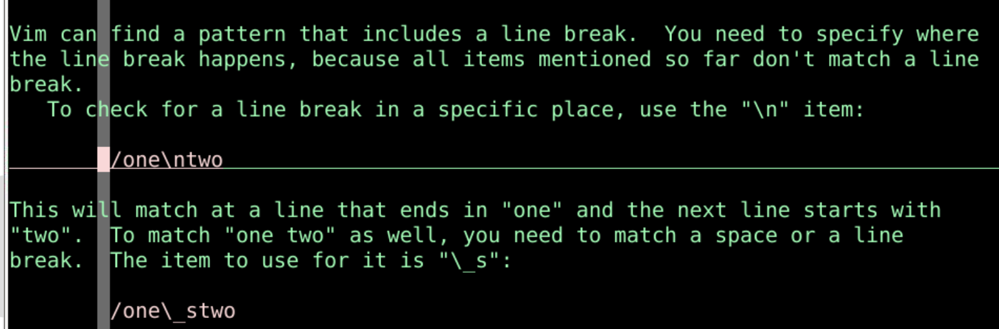
贪婪匹配
- 默认
*的匹配是贪婪的- 找行内最大范围内的匹配
- 注意这把两个
markdown的加粗标记连在一起了
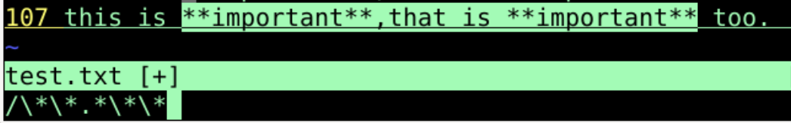
\*\*.*\*\*\*\*代表前两个星号.的数量是*\*\*代表后两个星号
非贪婪匹配
- 还有一种非贪婪匹配
- 他是非贪婪的
- 只找最小范围内的匹配
- 注意他把这两个分开了
\*\*.\{-}\*\*\*\*代表前两个星号- .的数量是
\{-} \*\*代表后两个星号
.的数量是\{-}

正则表达
- 行头行尾
^意味着行开头$意味着行结尾
- 词头词尾
\<意味着单词开头\>意味着单词结尾
/^a[a-z]*d$- a开头
- d结尾
- 中间有任意多个小写字母
c语言标识符
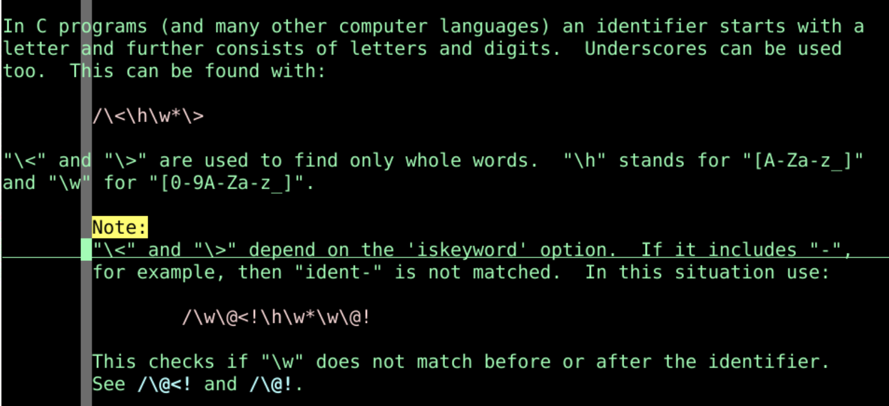
\h意味着[A-Za-z_]- 大小写字母和下划线
\w意味着[0-9A-Za-z_]- 大小写字母和下划线和数字
/\<\h\w*\>- 以字母或下划线开头
- 后跟字母下划线或数字
- 这是c语言标识符的语法规则
不以什么为开头
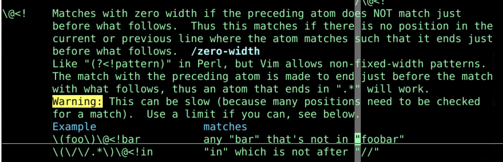
/\(o\)\@<!easyaeasy中的easy可以匹配beasy中的easy也可以匹配easy还可以匹配- 就是不匹配
oeasy中的easy - 但是匹配
oeasy中的easy
- 加上词头词尾
/.<\(o\)\@<!easy\>aeasy、beasy都可以匹配easy也可以匹配- 就是不匹配
oeasy
不以什么为结尾
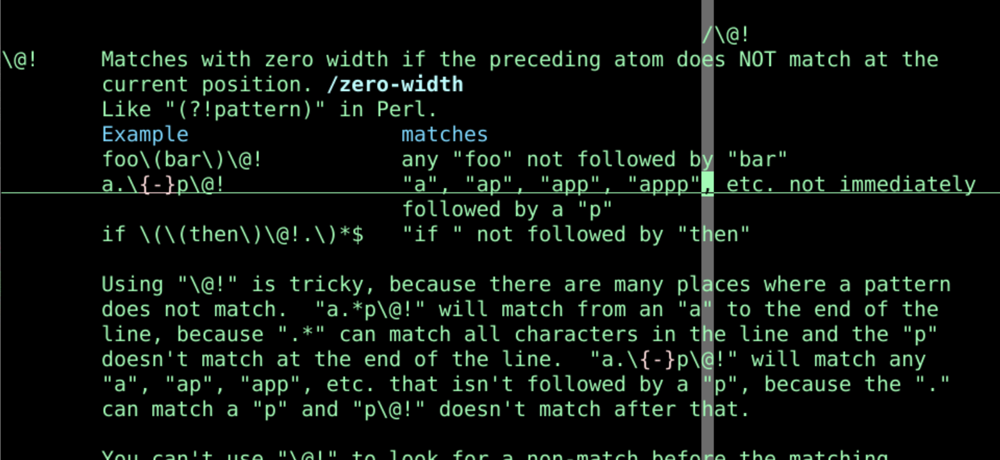
oea\(sy\)\@!oeasx中的oea可以匹配oeasz中的oea也可以匹配oea也都可以匹配- 就连
oeas中的oea也都可以匹配 - 就是不匹配
oeasy中的oea
- 加上词头词尾
/oea\(sy\)\@!..\>oeasx匹配oeasz匹配oeasy不匹配
总结
- 我们温习了关于搜索的相关内容
- /正向，?反向
- n保持方向，N改变方向
- 可以设置
- 是否忽略大写小写
- 是否从头开始查找
- 是否高亮显示
- 还有一些正则表达式的使用方法
- 行头行尾
^$ - 词头词尾
\<\> - 字符列表
[a-z]、[A-Za-z_] - 包含回车
one\_stwo
- 行头行尾
- 数量
- 数量
*、?、= - 具体数量
\{1,3} - 非贪婪
\{-}
- 数量
- 不以什么为开头结尾
- 不以什么为开头
\@<! - 不以什么为结尾
\@!
- 不以什么为开头
- 查找出来怎么替换呢？🤔
- 下次再说 👋